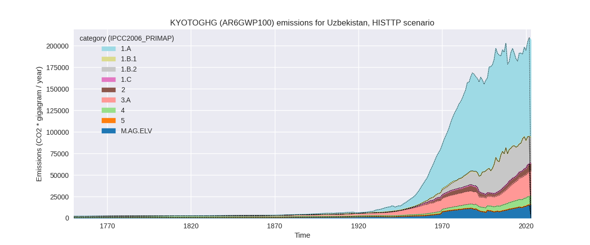
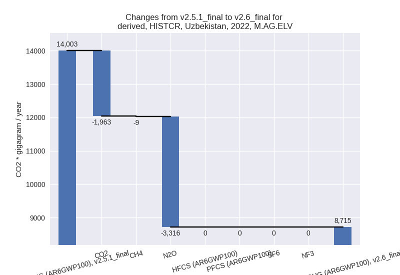

Changes in PRIMAP-hist v2.6_final compared to v2.5.1_final for Uzbekistan
2024-09-24
Johannes Gütschow
Change analysis for Uzbekistan for PRIMAP-hist v2.6_final compared to v2.5.1_final
Overview over emissions by sector and gas
The following figures show the aggregate national total emissions excluding LULUCF AR6GWP100 for the country reported priority scenario. The dotted linesshow the v2.5.1_final data.

The following figures show the aggregate national total emissions excluding LULUCF AR6GWP100 for the third party priority scenario. The dotted linesshow the v2.5.1_final data.

Overview over changes
In the country reported priority scenario we have the following changes for aggregate Kyoto GHG and national total emissions excluding LULUCF (M.0.EL):
- Emissions in 2022 have changed by 1.4%% (3088.45 Gg CO2 / year)
- Emissions in 1990-2022 have changed by -18.0%% (-37892.83 Gg CO2 / year)
In the third party priority scenario we have the following changes for aggregate Kyoto GHG and national total emissions excluding LULUCF (M.0.EL):
- Emissions in 2022 have changed by -0.6%% (-1217.13 Gg CO2 / year)
- Emissions in 1990-2022 have changed by -0.1%% (-167.24 Gg CO2 / year)
Most important changes per scenario and time frame
In the country reported priority scenario the following sector-gas combinations have the highest absolute impact on national total KyotoGHG (AR6GWP100) emissions in 2022 (top 5):
- 1: 1.B.2, CH4 with -30020.33 Gg CO2 / year (-55.6%)
- 2: 2, CO2 with 16438.63 Gg CO2 / year (174.5%)
- 3: 1.A, CO2 with 13796.59 Gg CO2 / year (13.3%)
- 4: 4, CH4 with 6240.71 Gg CO2 / year (196.9%)
- 5: M.AG.ELV, N2O with -3316.29 Gg CO2 / year (-27.9%)
In the country reported priority scenario the following sector-gas combinations have the highest absolute impact on national total KyotoGHG (AR6GWP100) emissions in 1990-2022 (top 5):
- 1: 1.B.2, CH4 with -45886.87 Gg CO2 / year (-62.9%)
- 2: 2, CO2 with 7064.38 Gg CO2 / year (115.6%)
- 3: 4, CH4 with 3996.86 Gg CO2 / year (153.6%)
- 4: M.AG.ELV, CO2 with -1500.92 Gg CO2 / year (-100.0%)
- 5: M.AG.ELV, N2O with -1458.37 Gg CO2 / year (-21.2%)
In the third party priority scenario the following sector-gas combinations have the highest absolute impact on national total KyotoGHG (AR6GWP100) emissions in 2022 (top 5):
- 1: 1.A, CO2 with -1036.86 Gg CO2 / year (-0.9%)
- 2: 4, CH4 with -348.07 Gg CO2 / year (-3.7%)
- 3: 5, N2O with 180.21 Gg CO2 / year (98.2%)
- 4: 1.B.2, CO2 with -33.09 Gg CO2 / year (-3.7%)
- 5: 4, N2O with 20.35 Gg CO2 / year (3.5%)
In the third party priority scenario the following sector-gas combinations have the highest absolute impact on national total KyotoGHG (AR6GWP100) emissions in 1990-2022 (top 5):
- 1: 4, CH4 with -158.45 Gg CO2 / year (-2.4%)
- 2: 1.A, CO2 with -75.81 Gg CO2 / year (-0.1%)
- 3: 5, N2O with 74.19 Gg CO2 / year (31.9%)
- 4: 1.B.2, CO2 with -23.40 Gg CO2 / year (-1.1%)
- 5: 4, N2O with 16.20 Gg CO2 / year (4.3%)
Notes on data changes
Here we list notes explaining important emissions changes for the country. ’' means that the following text only applies to the TP time series, while means that it only applies to the CR scenario. Otherwise the note applies to both scenarios.
- We have included data from the NIR submitted as BTR1. The data deviates significantly from older submissions for many sectors and gases and changes emissions in the CR time-series. All notes below refer to the CR time-series unless noted otherwise.
- The highest reduction is in fugitive CH4 which is now more in line with third part data (EDGAR).
- CO2 from IPPU is much higher for all years. The main contribution comes from mineral industry, especially glass production.
- Energy CO2 emissions are higher in 2022 due to added country reported data which differs from CDIAC and EI data used in v2.5.1
- The change in IPPU CH4 comes from metal industry (2.C) where EDGAR data stops in 2012 and is extended using country reported data.
- Changes in sectors 4 and 5 in the TP scenario are due to the removal of FAOSTAT data.
Changes by sector and gas
For each scenario and time frame the changes are displayed for all individual sectors and all individual gases. In the sector plot we use aggregate Kyoto GHGs in AR6GWP100. In the gas plot we usenational total emissions without LULUCF. ## country reported scenario
2022

1990-2022
third party scenario
2022
1990-2022
Detailed changes for the scenarios:
country reported scenario (HISTCR):
Most important changes per time frame
For 2022 the following sector-gas combinations have the highest absolute impact on national total KyotoGHG (AR6GWP100) emissions in 2022 (top 5):
- 1: 1.B.2, CH4 with -30020.33 Gg CO2 / year (-55.6%)
- 2: 2, CO2 with 16438.63 Gg CO2 / year (174.5%)
- 3: 1.A, CO2 with 13796.59 Gg CO2 / year (13.3%)
- 4: 4, CH4 with 6240.71 Gg CO2 / year (196.9%)
- 5: M.AG.ELV, N2O with -3316.29 Gg CO2 / year (-27.9%)
For 1990-2022 the following sector-gas combinations have the highest absolute impact on national total KyotoGHG (AR6GWP100) emissions in 1990-2022 (top 5):
- 1: 1.B.2, CH4 with -45886.87 Gg CO2 / year (-62.9%)
- 2: 2, CO2 with 7064.38 Gg CO2 / year (115.6%)
- 3: 4, CH4 with 3996.86 Gg CO2 / year (153.6%)
- 4: M.AG.ELV, CO2 with -1500.92 Gg CO2 / year (-100.0%)
- 5: M.AG.ELV, N2O with -1458.37 Gg CO2 / year (-21.2%)
Changes in the main sectors for aggregate KyotoGHG (AR6GWP100) are
- 1: Total sectoral emissions in 2022 are 143304.39
Gg CO2 / year which is 65.6% of M.0.EL emissions. 2022 Emissions have
changed by -10.0% (-15998.37 Gg CO2
/ year). 1990-2022 Emissions have changed by -26.7% (-46660.69 Gg CO2 / year). For 2022
the changes per gas
are:
For 1990-2022 the changes per gas are:
The changes come from the following subsectors:- 1.A: Total sectoral emissions in 2022 are 118334.49
Gg CO2 / year which is 82.6% of category 1 emissions. 2022 Emissions
have changed by 12.7% (13362.29 Gg
CO2 / year). 1990-2022 Emissions have changed by -1.5% (-1493.77 Gg CO2 / year). For 2022
the changes per gas
are:
There is no subsector information available in PRIMAP-hist. - 1.B.1: Total sectoral emissions in 2022 are 221.53
Gg CO2 / year which is 0.2% of category 1 emissions. 2022 Emissions have
changed by -1.7% (-3.77 Gg CO2 /
year). 1990-2022 Emissions have changed by -31.7% (-90.56 Gg CO2 / year). For
1990-2022 the changes per gas
are:
There is no subsector information available in PRIMAP-hist. - 1.B.2: Total sectoral emissions in 2022 are
24748.37 Gg CO2 / year which is 17.3% of category 1 emissions. 2022
Emissions have changed by -54.3%
(-29356.89 Gg CO2 / year). 1990-2022 Emissions have changed by -61.5% (-45076.36 Gg CO2 / year). For 2022
the changes per gas
are:
For 1990-2022 the changes per gas are:
There is no subsector information available in PRIMAP-hist.
- 1.A: Total sectoral emissions in 2022 are 118334.49
Gg CO2 / year which is 82.6% of category 1 emissions. 2022 Emissions
have changed by 12.7% (13362.29 Gg
CO2 / year). 1990-2022 Emissions have changed by -1.5% (-1493.77 Gg CO2 / year). For 2022
the changes per gas
are:
- 2: Total sectoral emissions in 2022 are 29167.28 Gg
CO2 / year which is 13.3% of M.0.EL emissions. 2022 Emissions have
changed by 168.7% (18311.56 Gg CO2 /
year). 1990-2022 Emissions have changed by 96.7% (7318.27 Gg CO2 / year). For 2022
the changes per gas
are:
For 1990-2022 the changes per gas are: - M.AG: Total sectoral emissions in 2022 are 35539.14
Gg CO2 / year which is 16.3% of M.0.EL emissions. 2022 Emissions have
changed by -15.5% (-6496.97 Gg CO2 /
year). 1990-2022 Emissions have changed by -13.2% (-3298.59 Gg CO2 / year). For 2022
the changes per gas
are:
For 1990-2022 the changes per gas are:
The changes come from the following subsectors:- 3.A: Total sectoral emissions in 2022 are 26824.10
Gg CO2 / year which is 75.5% of category M.AG emissions. 2022 Emissions
have changed by -4.3% (-1209.12 Gg
CO2 / year). 1990-2022 Emissions have changed by -1.8% (-296.73 Gg CO2 / year). For 2022
the changes per gas
are:
There is no subsector information available in PRIMAP-hist. - M.AG.ELV: Total sectoral emissions in 2022 are
8715.03 Gg CO2 / year which is 24.5% of category M.AG emissions. 2022
Emissions have changed by -37.8%
(-5287.84 Gg CO2 / year). 1990-2022 Emissions have changed by -34.5% (-3001.86 Gg CO2 / year). For 2022
the changes per gas
are:

For 1990-2022 the changes per gas are:
There is no subsector information available in PRIMAP-hist.
- 3.A: Total sectoral emissions in 2022 are 26824.10
Gg CO2 / year which is 75.5% of category M.AG emissions. 2022 Emissions
have changed by -4.3% (-1209.12 Gg
CO2 / year). 1990-2022 Emissions have changed by -1.8% (-296.73 Gg CO2 / year). For 2022
the changes per gas
are:
- 4: Total sectoral emissions in 2022 are 10219.44 Gg
CO2 / year which is 4.7% of M.0.EL emissions. 2022 Emissions have
changed by 208.7% (6908.56 Gg CO2 /
year). 1990-2022 Emissions have changed by 166.2% (4441.36 Gg CO2 / year). For 2022
the changes per gas
are:
For 1990-2022 the changes per gas are: - 5: Total sectoral emissions in 2022 are 363.67 Gg
CO2 / year which is 0.2% of M.0.EL emissions. 2022 Emissions have
changed by inf% (363.67 Gg CO2 /
year). 1990-2022 Emissions have changed by inf% (306.82 Gg CO2 / year). For 2022 the
changes per gas
are:
For 1990-2022 the changes per gas are:
third party scenario (HISTTP):
Most important changes per time frame
For 2022 the following sector-gas combinations have the highest absolute impact on national total KyotoGHG (AR6GWP100) emissions in 2022 (top 5):
- 1: 1.A, CO2 with -1036.86 Gg CO2 / year (-0.9%)
- 2: 4, CH4 with -348.07 Gg CO2 / year (-3.7%)
- 3: 5, N2O with 180.21 Gg CO2 / year (98.2%)
- 4: 1.B.2, CO2 with -33.09 Gg CO2 / year (-3.7%)
- 5: 4, N2O with 20.35 Gg CO2 / year (3.5%)
For 1990-2022 the following sector-gas combinations have the highest absolute impact on national total KyotoGHG (AR6GWP100) emissions in 1990-2022 (top 5):
- 1: 4, CH4 with -158.45 Gg CO2 / year (-2.4%)
- 2: 1.A, CO2 with -75.81 Gg CO2 / year (-0.1%)
- 3: 5, N2O with 74.19 Gg CO2 / year (31.9%)
- 4: 1.B.2, CO2 with -23.40 Gg CO2 / year (-1.1%)
- 5: 4, N2O with 16.20 Gg CO2 / year (4.3%)
Changes in the main sectors for aggregate KyotoGHG (AR6GWP100) are
- 1: Total sectoral emissions in 2022 are 145837.45 Gg CO2 / year which is 69.9% of M.0.EL emissions. 2022 Emissions have changed by -0.7% (-1069.95 Gg CO2 / year). 1990-2022 Emissions have changed by -0.1% (-99.21 Gg CO2 / year).
- 2: Total sectoral emissions in 2022 are 9490.32 Gg CO2 / year which is 4.6% of M.0.EL emissions. 2022 Emissions have changed by 0.0% (0.32 Gg CO2 / year). 1990-2022 Emissions have changed by 0.0% (0.03 Gg CO2 / year).
- M.AG: Total sectoral emissions in 2022 are 43120.79 Gg CO2 / year which is 20.7% of M.0.EL emissions. 2022 Emissions have changed by 0.0% (0.00 Gg CO2 / year). 1990-2022 Emissions have changed by 0.0% (0.00 Gg CO2 / year).
- 4: Total sectoral emissions in 2022 are 9727.16 Gg
CO2 / year which is 4.7% of M.0.EL emissions. 2022 Emissions have
changed by -3.3% (-327.72 Gg CO2 /
year). 1990-2022 Emissions have changed by -2.0% (-142.24 Gg CO2 / year). For 2022
the changes per gas
are:
For 1990-2022 the changes per gas are: - 5: Total sectoral emissions in 2022 are 363.67 Gg
CO2 / year which is 0.2% of M.0.EL emissions. 2022 Emissions have
changed by 98.2% (180.21 Gg CO2 /
year). 1990-2022 Emissions have changed by 31.9% (74.19 Gg CO2 / year). For 2022 the
changes per gas
are:
For 1990-2022 the changes per gas are: